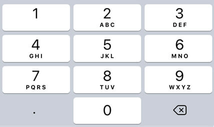
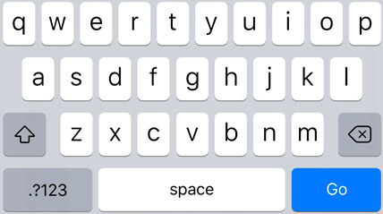
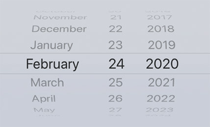
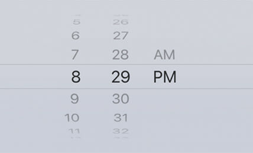

En 2008, alors que HTML5 voyait le jour, les formulaires furent bonifiés avec de nouvelles balises simplifiant la vie des développeurs et des internautes. En voici quelques unes des plus communes parmi celles-ci.
Parfait pour les valeurs numériques 🔢, ce champ empêche l'usager d'entrer des valeurs alphabétique et ajoute des flèches permettant d'incrémenter / décrémenter le nombre saisi ↕️.
Il permet entre autre d'éviter qu'un usager entre le texte "deux" plutôt que le chiffre "2" afin d'indiquer le nombre de pizzas désirées.
Attributs de number
name nom de référence lorsque le formulaire est soumis.min etmax permettent de spécifier un nombre minimal et maximal à respecter.step définit la granularité. Autrement dit, le saut entre chaque valeur. Par défaut, la valeur de step est à 1. Cependant, il est possible de modifier cette valeur. Par exemple,step: 2 fait en sorte que les valeurs 0, 2, 4, 6, 8 et 10 sont possibles, mais non la valeur 9.disabled permet d'afficher en lecture seule le champ number.
Mobile
Sur mobile, lorsque ce champ reçoit le focus, un pavé numérique est affiché à la place du traditionnel clavier alphanumérique, simplifiant ainsi l'entrée de données à l'usager.
Permets de choisir une valeur entre deux extrémités. Leur usage est approprié lorsqu'une valeur approximative est suffisante.
Par exemple, choisir plus ou moins de sauce sur une pizza est plus intuitif à l'aide de ce type de contrôle que de spécifier une quantité en millilitres🥫:
Attributs de range
name nom de référence lorsque le formulaire est soumis.min etmax permettent de spécifier un nombre minimal et maximal à respecter.step définit la granularité. Autrement dit, le saut entre chaque valeur. Par exemple,step: 100 fait en sorte que les valeurs 0, 100, 200, 300, etc. sont possibles, mais non la valeur 150.disabled permet d'afficher en lecture seule un widget range.
Comme son nom l'indique, ce champ conviens aux mots de passe 🔑. Il permet entre autre d'entrer son mot de passe en toute discrétion, puisque les caractères affichés à l'écran sont remplacés par des
Mobile
Sur mobile, les boutons 😀 et 🎙 sont retirés puisque la majorités des mots de passe ne supportent pas les émojis et que l'utilisation du dictaphone implique forcément de dire son mot de passe à voix haute, ce qui peut causer des enjeux de confidentialité.
Comme son nom l'indique, ce champ est conçu afin de gérer les courriels ✉️. Il ajoute automatiquement les pseudo-classes
Mobile
Sur mobile, le bouton 🎙 du clavier est remplacé par les boutons
Évidemment, ce champ est conçu pour les numéros de téléphone 📞. Les navigateurs suggèreront généralement des numéros précédemment entrés afin de faire sauver du temps à l'usager.
Contrairement au champ de type email, ce champ ne fait aucune validation par défaut, puisque les numéros de téléphone varient grandement de format d'un pays à l'autre.
Attributs de tel
inputmode="decimal" affichent un pavé numérique agrémenté des symboles+*# sur les appareils mobile afin de simplifier la vie de l'usager.disabled permet d'afficher en lecture seule le champ de téléphone.
Mobile
Lorsque l'attribut

Ce champ est conçu pour les barres de recherche 🔍. Il ajoute automatiquement une croix permettant d'effacer rapidement le texte saisi ❌. ce qui s'avère souvent utile dans le cadre d'une recherche. Certains navigateurs proposent même une autocomplétition sur ces champs avec des valeurs précédemment utilisées.
Mobile
Sur mobile, le clavier est pratiquement identique à celui par défaut outre la présence du bouton
Permets, comme son nom l'indique, de sélectionner une date dans un calendrier 📅.
Attributs de date
min etmax permettent de spécifier une date minimale et maximale à respecter. Par exemple,min="1980-01-01" fait en sorte qu'aucune date inférieure au 1er janvier 1980 ne puisse être sélectionnée.disabled permet d'afficher en lecture seule l'outil de sélection de date.
Mobile
Sur mobile, un calendrier ou une molette de date comme sur l'image suivante sera affiché.
Permets de saisir une heure 🕰.
Attributs de time
- Les attributs
min etmax permettent de spécifier une heure minimale et maximale à respecter. Par exemple,min="09:00" fait en sorte qu'aucune heure avant 9am ne puisse être sélectionnée. disabled permet d'afficher en lecture seule l'outil de sélection d'heure.
Mobile
Sur mobile, une horloge ou une molette d'heures comme sur l'image suivante sera affichée.
Permet de choisir une couleur à l'aide d'un sélecteur de couleurs (colors picker) 🎨, plutôt que d'avoir a entrer un code hexadécimal, RGB ou autre.
Attributs de color
name nom de référence lorsque le formulaire est soumis.value code de la couleur par défaut. Si cet attribut est omis, la couleur utilisée par défaut sera (noir ⬛️).disabled permet d'afficher en lecture seule l'outil de sélection de couleur.